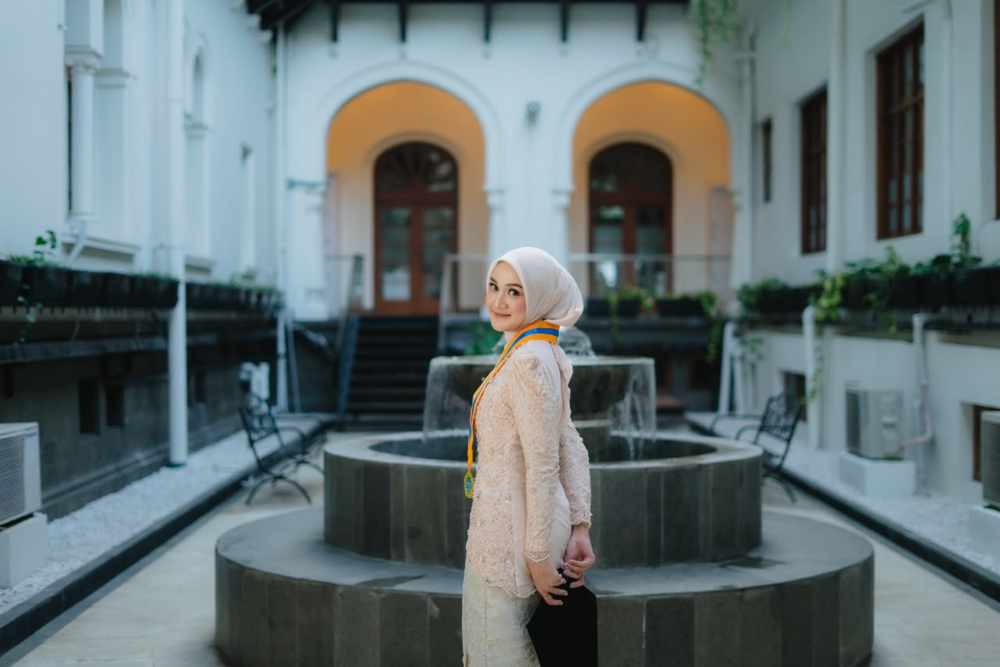

Saya merupakan lulusan S1 Sistem Informasi Universitas
Komputer Indonesia yang memiliki ketertarikan pada
analisis data, perancangan sistem informasi,
pengembangan website, UI/UX, serta strategi pemasaran digital.
Menggabungkan kemampuan analitis, pemahaman teknologi,
dan kreativitas untuk menghasilkan solusi digital
yang bermanfaat.
Latar belakang pendidikan, kompetensi, dan minat profesional saya.

UNIKOMBachelor of Information Systems
WHO I AM
Turning Ideas Into Digital Solutions
Saya merupakan lulusan S1 Sistem Informasi Universitas
Komputer Indonesia dengan IPK 3,60/4,00 dan gelar
Sarjana Komputer (S.Kom.).
Memiliki pengalaman dan ketertarikan dalam berbagai
bidang teknologi informasi, mulai dari analisis
kebutuhan sistem, pengolahan dan visualisasi data,
pengembangan aplikasi berbasis web, hingga pengelolaan
pemasaran digital.
Saya terbiasa menggunakan berbagai tools seperti SQL,
Microsoft Excel, Power BI, Figma, Canva, dan platform
digital marketing untuk mendukung pekerjaan dan
pengembangan proyek.
Saya memiliki semangat untuk terus belajar, berpikir
analitis, bekerja secara terstruktur, serta
berkontribusi dalam menciptakan solusi yang bermanfaat.
Pengalaman profesional, program pengembangan kompetensi, dan aktivitas organisasi.
Oktober – November 2026
01
Digital Credit Marketing
PT BPR Kertamulia
Mendukung aktivitas pemasaran kredit melalui
pengelolaan Facebook Ads, pembuatan desain promosi,
penyusunan konten pemasaran, serta komunikasi
dengan calon nasabah.
Terlibat dalam proyek DISMA (Diskominfo Masyarakat
Assistant), dengan fokus pada analisis kebutuhan
pengguna, identifikasi kebutuhan sistem, serta
perancangan solusi chatbot untuk mendukung layanan
informasi masyarakat.
System AnalysisRequirement AnalysisSystem DesignChatbot
Agustus – Desember 2024
03
Digital Marketing – Studi Independen Bersertifikat Angkatan 7
PT Satu Visi Indocreative (B-One Corporation)
Mengikuti program Studi Independen dengan fokus
Digital Marketing dan Marketing 5.0. Mengerjakan
strategi konten, pengelolaan media sosial, desain
promosi, copywriting, SEO, riset kata kunci,
digital advertising, dan pemanfaatan tools AI.
Mengembangkan proyek capstone Sahabat AI dan
memperoleh penghargaan Juara Harapan 1.
Mendukung pekerjaan melalui pengelolaan informasi, dokumentasi, komunikasi, kolaborasi, dan pemecahan masalah.
Data EntryReportingCommunicationTeamworkProblem SolvingAI Tools
MY SELECTED WORK
Projects & Portfolio
Kumpulan proyek yang menggambarkan pengalaman dan kemampuan saya dalam bidang teknologi dan digital.
FULL STACK WEB DEVELOPMENT
ACADEMIC INFORMATION SYSTEM
SIAKAD SDN Cimanahayu
Sistem Informasi Akademik berbasis web untuk
membantu pengelolaan data siswa, guru, kelas,
mata pelajaran, penilaian, absensi, jadwal,
hingga pencetakan rapor.
Proyek analisis data yang mencakup pengolahan,
pembersihan, eksplorasi, dan visualisasi data
untuk menghasilkan insight yang mudah dipahami.
SQLPower BIMicrosoft ExcelData Analysis
SYSTEM ANALYSIS
SYSTEM REQUIREMENT & DESIGN
DISMA – Diskominfo Masyarakat Assistant
Proyek analisis dan perancangan chatbot untuk
mendukung layanan informasi masyarakat melalui
identifikasi kebutuhan pengguna dan perancangan
solusi sistem.
System AnalysisSDLCRequirement AnalysisSystem DesignChatbot
DIGITAL MARKETING
CAPSTONE PROJECT
Sahabat AI
Proyek capstone berupa strategi digital advertising
dan website marketing untuk membantu UMKM,
freelancer, serta perusahaan mengenal dan
memanfaatkan teknologi AI.
Digital AdvertisingAI ToolsWebsite MarketingContent Strategy
WEB DEVELOPMENT
WEBSITE DEVELOPMENT
Kink Outdoor Rental
Proyek pengembangan website dengan WordPress
untuk menampilkan informasi layanan penyewaan
perlengkapan outdoor melalui desain web yang
informatif dan mudah digunakan.
WordPressWebsite DevelopmentWeb Design
WEB DEVELOPMENT
WEBSITE PROJECT
Virakiess
Proyek pembuatan website dengan fokus pada
pengembangan tampilan antarmuka, struktur halaman,
dan pengalaman pengguna.
Web DevelopmentUI DesignWebsite
SOCIAL MEDIA
CONTENT & SOCIAL MEDIA MANAGEMENT
Social Media Management
Pembuatan konten media sosial, desain visual,
perencanaan konten, dan materi promosi untuk
mendukung komunikasi serta pemasaran digital.
CanvaCapCutContent PlanningSocial Media
SEO & ANALYTICS
SEARCH ENGINE OPTIMIZATION
SEO & Keyword Research
Melakukan riset kata kunci dan analisis SEO
untuk mendukung optimasi website serta
meningkatkan peluang visibilitas di mesin pencari.
SemrushSEOKeyword ResearchGoogle Analytics
CREATIVE DESIGN
VISUAL & CREATIVE CONTENT
Graphic Design & Promotional Materials
Kumpulan karya desain grafis dan materi promosi
untuk kebutuhan komunikasi visual, branding,
serta konten digital.
CanvaFigmaGraphic DesignVisual Content
LEARNING & ACHIEVEMENTS
Certificates & Achievements
Sertifikasi, pelatihan, dan pencapaian sebagai bagian dari pengembangan kompetensi.
Novo Club Batch 3
Paragon Corp
CCNAv7
Cisco Networking Academy
Data Analyst Certification
BNSP
Organizational Experience
Himpunan Mahasiswa Sistem Informasi
Studi Independen Bersertifikat
Kampus Merdeka – MSIB
Peserta Terbaik Harapan 1
Capstone Project Sahabat AI
Data Science
Training & Certification
Introduction to Digital Marketing
RevoU
LET'S WORK TOGETHER
Get In Touch
Terbuka untuk peluang profesional, kolaborasi, dan kesempatan baru.
Let's create something meaningful together.
Jangan ragu untuk menghubungi saya apabila ingin
berdiskusi mengenai peluang kerja, proyek,
kolaborasi, atau hal menarik lainnya.


.png)
.png)
/01 — Home Aksesmu.png)
/02 — Smart Reorder.png)
/03 — Promo Match.png)
/04 — Keranjang.png)
/05 — Review Pesanan.png)
/06 — Order Success (Prototype).png)


.png)
.png)


.png)
.png)
.png)


.jpeg)
.jpeg)